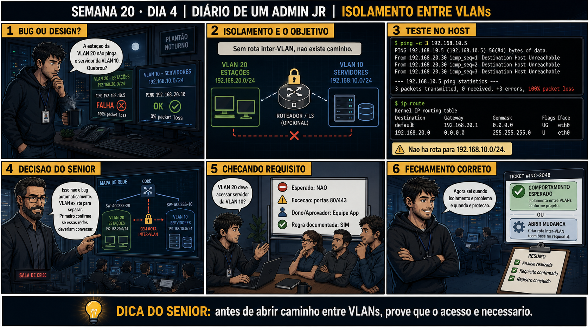

Semana 20 · Dia 4 | Nível Júnior — Redes
Validando Isolamento entre VLANs
ping falhando entre VLANs diferentes pode ser a prova de que tudo está funcionando certo
ANTES DE ALTERAR, OBSERVE. DEPOIS DE ALTERAR, VALIDE.
1. O chamado
#2004
PRIORIDADE ALTA
08:50
aberto por: coordenação de eventos / segurança da informação
host: VLAN 50 (visitantes) → VLAN 10 (interna) · serviço: auditoria de isolamento pré-evento
"Preciso de uma auditoria formal confirmando que a VLAN de visitantes realmente não alcança a VLAN interna, antes de liberar o Wi-Fi de visitantes pro evento de amanhã."
O evento é amanhã de manhã. Como você prova isso com evidência, não com achismo?
💡 Passa o mouse nas palavras destacadas pra ver uma dica rápida — clica se quiser a explicação completa com analogia.
2. Antes de ver as opções — tenta responder
🧠 Recall ativo: quais DOIS testes, no mínimo, você precisa fazer pra validar de verdade que o
isolamento entre duas VLANs está funcionando — não só um?
Primeiro: testar conectividade DENTRO da mesma VLAN (ex.: dois dispositivos na VLAN de visitantes se
pingando) — isso confirma que a rede está funcionando normalmente, não que está tudo quebrado por outro
motivo. Segundo: testar conectividade ENTRE VLANs diferentes (visitante tentando pingar a rede interna) —
isso confirma o isolamento em si. Testar só o segundo, sem o primeiro, deixa uma dúvida: será que o
"isolamento" que você viu não era, na verdade, uma rede simplesmente quebrada por outro motivo qualquer?
3. Questão comentada — clica numa alternativa
Você testa apenas um cenário: um notebook na VLAN de visitantes tentando pingar
um servidor na VLAN interna, e o ping falha. Você já pode concluir com confiança que o isolamento está
funcionando corretamente?
💡 Analogia do Sênior para Fixar: O princípio fundamental de 04 ISOLAMENTO ENTRE VLANS é como o alicerce de sustentação de um viaduto: garante que a estrutura de comunicação suporte alto tráfego sem colapsar.
4. Decodificador de conceitos
Clica em qualquer termo pra ver a definição completa e uma analogia do dia a dia:
5. Ferramentas e leitura da evidência
| Teste | Confirma |
|---|---|
| Dentro da mesma VLAN | Que a rede em si funciona normalmente (teste de controle). |
| Entre VLANs diferentes | Que o isolamento esperado está realmente ativo. |
| tcpdump nos dois lados | Confirma se o pacote sequer tentou atravessar, ou foi descartado no caminho. |
--- teste 1: controle, dentro da mesma VLAN de visitantes --- $ ping -c 3 192.168.50.20 # outro dispositivo, mesma VLAN 50 3 packets transmitted, 3 received, 0% packet loss ✅ rede de visitantes está funcionando normalmente --- teste 2: entre VLANs, visitante tentando alcançar rede interna --- $ ping -c 3 10.10.10.100 # servidor na VLAN 10 (interna) 3 packets transmitted, 0 received, 100% packet loss ✅ isolamento confirmado (porque o teste 1 já provou que a rede funciona) --- relatório de validação --- Data: 2026-09-01 VLAN 50 (visitantes) → VLAN 50: OK (controle) VLAN 50 (visitantes) → VLAN 10 (interna): BLOQUEADO (esperado) Conclusão: isolamento validado com evidência, liberado para o evento.
5.1 O painel 5 da prancha de hoje mostra o sênior insistindo em rodar o teste de controle ANTES do teste de isolamento, nunca depois
Um colega prefere testar primeiro entre VLANs, e só depois (se der tempo) testar dentro da mesma VLAN.
Por que faz mais sentido, na prática, rodar o teste de controle (dentro da mesma
VLAN) ANTES do teste de isolamento (entre VLANs)?
💡 Analogia do Sênior para Fixar: Diagnosticar anomalias em 04 ISOLAMENTO ENTRE VLANS é como o eletricista usando o multímetro no quadro de disjuntores: mede a passagem de sinal no ponto exato da falha.
5.2 "Se ping falha entre VLANs, isso prova que NENHUM tráfego atravessa, de nenhum tipo?"
Um colega assume que ping falhando entre duas VLANs já garante que absolutamente nenhum outro tipo de tráfego (como uma porta TCP específica) consegue atravessar.
Por que só testar com ping (ICMP) pode não ser suficiente pra uma validação de
isolamento realmente completa?
💡 Analogia do Sênior para Fixar: Aplicar as boas práticas de 04 ISOLAMENTO ENTRE VLANS é como o protocolo de segurança da aviação: elimina pontos únicos de falha e garante previsibilidade operacional.
6. Procedimento profissional
- Antes de validar isolamento, teste conectividade DENTRO da mesma VLAN (teste de controle).
- Só então teste conectividade ENTRE as VLANs que deveriam estar isoladas.
- Considere testar mais de um protocolo (não só ICMP/ping), especialmente se houver firewall entre VLANs.
- Documente cada teste com data, origem, destino e resultado.
- Registre a conclusão formal antes de liberar o ambiente pra uso, como no chamado do evento.
7. Laboratório guiado — marca conforme for testando
⚠️ Este laboratório precisa de uma segunda máquina/VM real (ou de hardware/reboot que um terminal online não reproduz) — pratique no seu ambiente virtual. Não está disponível no terminal Killercoda.
Segurança: execute os testes apenas em ambiente de laboratório e confirme nomes de dispositivos e VLANs antes de cada teste.
- Teste ping entre dois dispositivos na mesma VLAN de laboratório.Resultado esperado: 0% de perda de pacote — a rede funciona normalmente.
- Teste ping de um dispositivo numa VLAN pra outro dispositivo em VLAN diferente.Resultado esperado: 100% de perda de pacote, confirmando o isolamento.🧑🏫 Aqui entra o Mentor (em breve): se o ping entre VLANs funcionar quando não deveria, este é o ponto onde o chat com o Sênior-IA vai te ajudar a revisar a configuração do trunk (Dia 2) e das subinterfaces (Dia 3).
- Capture tráfego com tcpdump durante o teste entre VLANs, confirmando se o pacote sai da origem mesmo assim.Resultado esperado: pacote saindo da origem, mas nunca aparecendo na captura do destino.
- Escreva um relatório curto de validação, seguindo o formato do exemplo da seção 5.Resultado esperado: relatório com data, testes realizados e conclusão formal.
8. Validação e encerramento
- Um único teste de falha não prova isolamento — é preciso também um teste de controle dentro da mesma VLAN.
- Testar o controle antes elimina ambiguidade na interpretação do resultado.
- Ping testa só ICMP — validações mais rigorosas podem precisar testar outros protocolos também.
- Um relatório de validação documentado é diferente de uma suposição informal de que "está tudo isolado".
Rollback e limites
Os testes de validação em si são só observação, sem risco de alteração. O cuidado
real é de processo: liberar um ambiente (como Wi-Fi de visitantes) baseado numa validação incompleta pode
expor recursos internos sensíveis — o rigor da validação deve ser proporcional ao risco do que está sendo
liberado.
💡 Sobre repetição espaçada: "teste de controle antes do teste principal" é
um princípio de método científico aplicado a redes — vale reforçar esse padrão geral de validação, não só o
caso específico de VLAN. O Anki vai conectar essa ideia a outros contextos de diagnóstico do curso.
9. Resposta final
Alternativa correta: A. Nesta aula, a conclusão foi que um único teste de
falha entre VLANs não é suficiente — é preciso confirmar também que a rede funciona normalmente dentro da
mesma VLAN. O ponto central do caso é este: ping falhando entre VLANs diferentes pode ser a prova de que tudo
está funcionando certo.
🔓 O que você desbloqueou hoje
Capacidade de validar isolamento entre VLANs com rigor, usando teste de
controle antes do teste principal. Amanhã fecha a Semana 20 com o cenário mais realista: diagnosticar quando
duas VLANs no mesmo switch NÃO estão isoladas como deveriam.